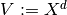
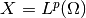
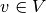
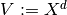
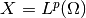
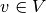
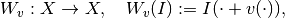
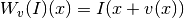
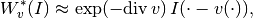
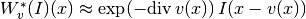

LinDeformFixedDisp¶
-
class
odl.deform.linearized.LinDeformFixedDisp(displacement, templ_space=None)[source]¶ Bases:
odl.operator.operator.OperatorDeformation operator with fixed displacement acting on templates.
The operator has a fixed displacement field
vand maps a templateIto the new functionx --> I(x + v(x)).See also
LinDeformFixedTempl- Deformation with a fixed template.
Notes
For
 , we take 
to be the space of displacement fields, where 
is the template space. Hence the deformation operator with the fixed
displacement field  maps
, we take 
to be the space of displacement fields, where 
is the template space. Hence the deformation operator with the fixed
displacement field  maps  into :
into :
i.e., .
This operator is linear, so its derivative is itself, but it may not be bounded and may thus not have a formal adjoint. For “small”
 ,
though, one can approximate the adjoint by
,
though, one can approximate the adjoint by
i.e., .
Attributes: adjointAdjoint of the linear operator.
displacementFixed displacement field of this deformation operator.
domainSet of objects on which this operator can be evaluated.
inverseInverse deformation using
-vas displacement.is_functionalTrueif this operator’s range is aField.is_linearTrueif this operator is linear.rangeSet in which the result of an evaluation of this operator lies.
Methods
_call(template[, out])Implementation of self(template[, out]).derivative(point)Return the operator derivative at point.norm([estimate])Return the operator norm of this operator. -
__init__(displacement, templ_space=None)[source]¶ Initialize a new instance.
Parameters: - displacement : element of a power space of
DiscreteLp Fixed displacement field used in the deformation.
- templ_space :
DiscreteLp, optional Template space on which this operator is applied, i.e. the operator domain and range. It must fulfill
templ_space[0].partition == displacement.space.partition, so this option is useful mainly for support of complex spaces and if different interpolations should be used for displacement and template. Default:displacement.space[0]
Examples
Create a simple 1D template to initialize the operator and apply it to a displacement field. Where the displacement is zero, the output value is the same as the input value. In the 4-th point, the value is taken from 0.2 (one cell) to the left, i.e. 1.0.
>>> space = odl.uniform_discr(0, 1, 5) >>> disp_field = space.tangent_bundle.element([[0, 0, 0, -0.2, 0]]) >>> op = LinDeformFixedDisp(disp_field) >>> template = [0, 0, 1, 0, 0] >>> print(op([0, 0, 1, 0, 0])) [ 0., 0., 1., 1., 0.]
The result depends on the chosen interpolation. With ‘linear’ interpolation and an offset equal to half the distance between two points, 0.1, one gets the mean of the values.
>>> space = odl.uniform_discr(0, 1, 5, interp='linear') >>> disp_field = space.tangent_bundle.element([[0, 0, 0, -0.1, 0]]) >>> op = LinDeformFixedDisp(disp_field) >>> template = [0, 0, 1, 0, 0] >>> print(op(template)) [ 0. , 0. , 1. , 0.5, 0. ]
- displacement : element of a power space of